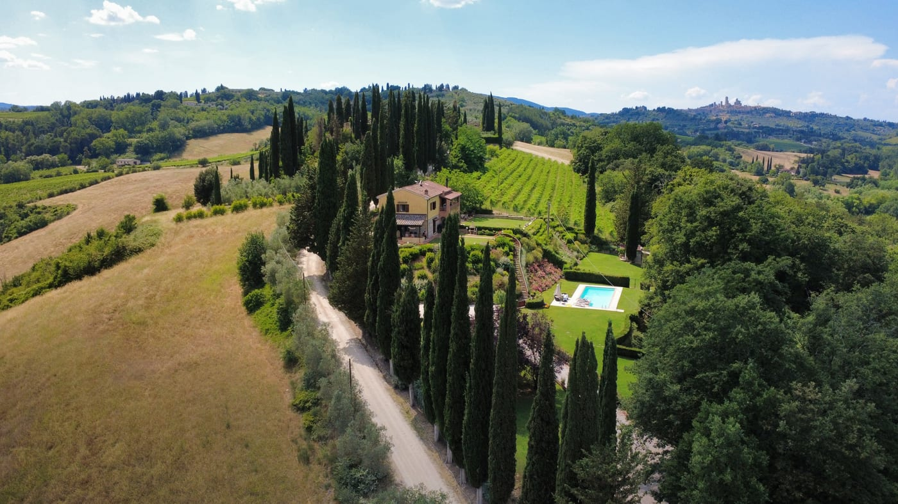

San Gimignano · Chianti · Toscana
Villa Sabrina
Una casa di campagna con piscina privata, che guarda le colline del Chianti

La casa
Cotto, mattone e legno, a cinque chilometri dalle torri
Villa Sabrina è una porzione di una villa di campagna, ristrutturata di recente e circondata dalle colline del Chianti. Si sviluppa su due piani, per 160 metri quadri.
Gli interni sono luminosi e arredati nello stile rustico toscano, con il cotto, il mattone e il legno lasciati a vista. Le tre camere hanno tutte l’aria condizionata.
I proprietari abitano nella porzione accanto, con ingresso separato, e sono a disposizione in caso di necessità. Si accede da una strada sterrata in buone condizioni.

Gli spazi
Cinque stanze, al chiuso e all’aperto
Il giardino è completamente recintato e riservato agli ospiti, e il porticato attrezzato è la stanza in più: ci si pranza e ci si cena all’aperto.
Servizi
Quello che c’è
Dintorni
Dove si arriva da qui
Galleria
La casa, il giardino, la vista
Clicca una foto per ingrandirla
Recensioni
Hai soggiornato a Villa Sabrina? Lascia una recensione su Posarelli Villas.
Le recensioni si lasciano dalla piattaforma dell’agenzia, dopo il soggiorno: se non hai prenotato tramite Posarelli Villas non troverai il modulo. Su questo sito non c’è nessun form.
Informazioni pratiche
Prima di partire
Arrivo e partenza
Arrivo tra le 17:00 e le 20:00, partenza tra le 08:00 e le 10:00.
Piscina
Aperta dal 15 aprile al 15 ottobre. Recintata, di uso esclusivo degli ospiti.
Incluso
- Biancheria da letto e da bagno, set iniziale
- Teli piscina
- Wi-Fi e aria condizionata
- Culla, su richiesta e senza costo
Regole della casa
- Animali accettati su richiesta
- Non si fuma all’interno
- Servizio di aiuto domestico su richiesta
Come si arriva
Si accede da una strada sterrata in buone condizioni. Parcheggio all’interno della proprietà.
I proprietari
Abitano nella porzione accanto, con ingresso indipendente, e sono a disposizione in caso di necessità.
Prezzi e disponibilità. Le tariffe cambiano con la stagione e la durata del soggiorno, e alcune voci si saldano sul posto. Per il preventivo aggiornato e il calendario fa fede la scheda ufficiale di Posarelli Villas, che gestisce le prenotazioni.


Disponibilità
Le date libere sono sulla scheda ufficiale
Calendario, tariffe e richieste passano da Posarelli Villas, che commercializza la casa.
Prezzi e disponibilità